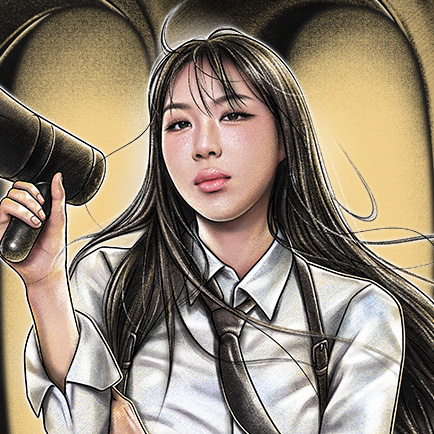
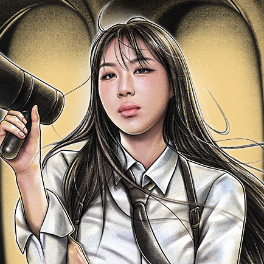
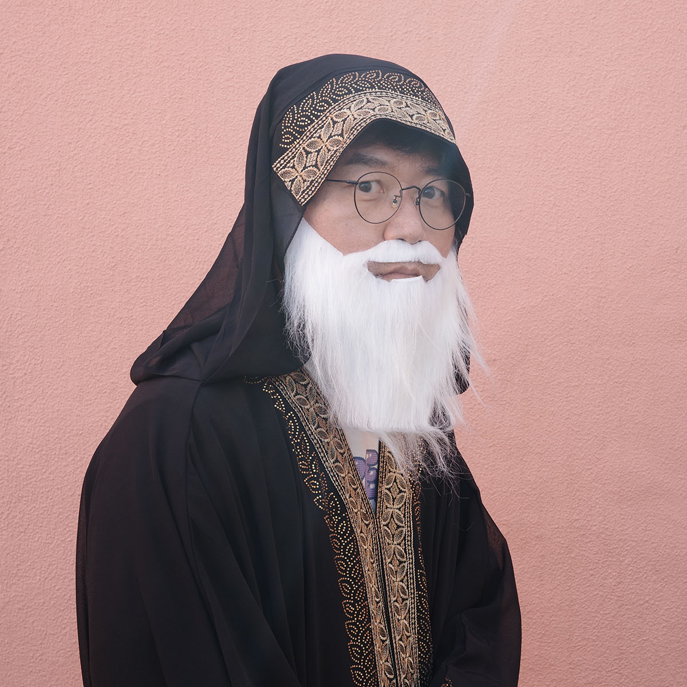
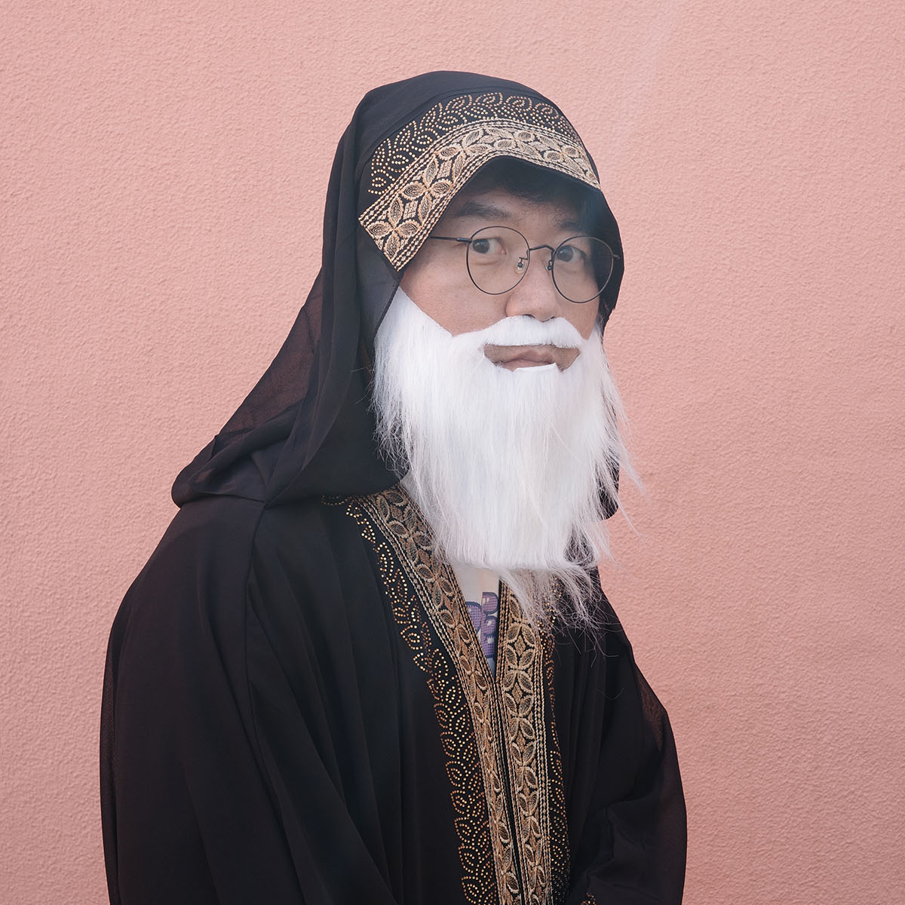

우리에겐 보이지 않는 달의 뒷면, 그곳에 자리 잡은 신상 핫플 '우주 떡집'
1광년 웨이팅은 기본, 연이은 떡 품절 대란으로 떡집 사장 ‘옥황상제’의 기분은 연일 최고조다.
사실 우주 떡집에는 매출 일등 공신이 있었으니, 다름 아닌 우수 사원 '옥 암스토롱 (a.k.a 토롱이)'
"잘 키운 토롱이 하나가 열 직원 안 부럽다!"
떡집 청결 관리부터 수·금·지·화 퀵 배송까지, 일당백 토롱이 덕에 떡집은 나날이 번창하는데...
그러던 어느 날, 옥황상제 앞으로 날아온 사표 한 장?!
「옥토롱, 그만두겟습니당」
지구로 도망간 달나라 토끼를 잡기 위해 옥황의 불음에 뭉친 4 명의 용사들!
시공간을 넘나들며 펼쳐지는 신개념 하이브리드 멀티버스 액션 어드벤처 버라이어티가 시작된다! 뿅
2022
EPISODE 1
쉴 틈 없는 떡방아와 잦은 야근으로 과로에 시달리던 토롱이는 결국 지구로 현생 탈출을 감행, 정열과 낭만의 나라 '태국'으로 토끼고 만다.
밀린 떡 주문과 함께 분노한 옥황상제, 인★ 라이브를 켜 팔로워들에게 전하길
"토롱이를 잡아 오는 자에게 현상금을 주겠노라!"
이에 ‘영앤골치’ 지구 용사 4인이 뭉치게 된다.
토낀 토롱이의 현상금을 노리는 지구 용사 넷, 태국에서 꿀휴양 중인 토롱이를 잡아 옥황상제의 곁으로 돌려보낼 수 있을지?
2023
EPISODE 2
지난여름, 자유를 꿈꿨던 떡집 알바생 토롱은 지구 용사들에게 잡혀 현생으로 귀환했다.
그러나 사장 옥황의 “라떼는~” 타령과 떡켓팅 열풍으로 털 빠질듯한 과로는 여전했는데...
토롱이 묘(卯)생을 한탄하며 다시 한번 ‘현생탈출염원기도’를 올리는 순간! 한 마리, 두 마리... 점점 늘어나는 토롱이들?!
제대로 킹(?) 받는 묘술을 얻게 된 토롱이는 지구 요리 조리로 무작정 토껴버린다.
무려 두 번째 탈출에 격분한 옥황은 [옥토롱 현상금 파격 인상]을 발표! 이에 경력직 지구 용사 4인방이 다시 한번 뭉쳤다!
“북극 찍고, 적도 끝까지 쫓아간다!”
전 세계를 누비는 어메이징 스케일, 겨울왕국 ‘핀란드’ 그리고 신들의 섬 ‘발리’에서 지구 용사즈의 예측 불허 대모험이 펼쳐진다.
2025
EPISODE 3
반복되는 현생 탈출 실패로 지난 2년간 귀 빠지게 떡만 만든 토롱이...
묘(卯)생사 포기란 없다! 큰 거 한 방 노린다며 천 년 만에 열린 우주 휴게소 회식에서 무려 사장 옥황의 ‘법인 카드’를 훔쳐 토껴버린다!
띠링♪ 띠리링♬
, 실시간으로 울려대는 옥황 핸드폰의 결제 알림 문자에, 결국 토롱이는 꼬리를 밟히게 된다.
옥황은 급하게 지구 용사 4인방을 소집한 한편, 이를 도울 'NEW 조력자'를 전격 투입하는데...
황금빛 사막 ‘아부다비’와 낭만의 나라 '포르투갈'로 신입 스파이 4인방!
그리고 최정예 특수 요원, '에이전트F'가 용사즈와 극비리에 접선을 시도하면서 우주 최초 ★합동 톢별 수사 작전★이 펼쳐진다.
CHOOSE CHARACTER!
이은지
소속: 우주 용사
특징: 끼폭발 용사
멀리서 보면 ‘희극’, 가까이서 보면 ‘광기’
희극인의 몸 안에 갇힌 댄서의 영혼!
넘치는 끼를 자제할 생각이 없는 방송댄스 전문(?) 톱 티어 코미디언.
카리스마 넘치는 오락실 짱을 꿈꾸지만, 현실은 동생들에게 혼나기 일쑤
하지만 언제 어디서든 타고난 센스와 순발력으로 카멜레온과 같이 완벽 위장 가능하며 드라마보다 더 드라마틱한 예능력으로 어떤 임무든 막장급 전개 펼치며 EASY~하게 해결
미미
소속: 우주 용사
특징: 엉뚱발랄 용사
상황 불문 ‘리얼 긍정 파워 빔’
아이스크림만 있으면 초긍정 모드 ON!
세상 무해한 인간미와 탈 지구급 친화력으로 동물들의 마음까지 훔친 이 구역의 인싸
엉뚱하지만, 용감무쌍한 '언어의 개척자'로 통하며 게임을 뒤흔드는 오답과 솔직함의 환장 콜라보로 명실상부 지락실의 MVP로 거듭난다.
간혹 예고없이 깨어나는 미친 천재성을 보여준다
 

이영지
소속: 우주 용사
특징: 불나방 용사
영석이 형 기선제압용 ‘사자후’
전투력 MAX, 공격력 MAX, 생명력... 측정 불가?! 전무후무한 예능 사기캐
지구 용사 대표 무한 에너자이저로 어디서든 당당하게 걷기 시전하다가도, FEEL 받으면 맨땅에 드러눕는 파격 행보를 보여준다.
대중들이 사랑하는 최신 유행이라면 자다가도 벌떡 일어날 세상 두려울 게 없는 MZ대표 행동대장
하지만 최근 그녀가 모르는 밈이 존재한다는 소문이 돌기도 하는데...
안유진
소속: 우주 용사
특징: 욕망 용사
‘욕망’ 속으로 Love Dive!
동년배보다 깊고 진한 ‘토종 입맛’ 뽐내며 먹을 것 앞에서만큼은 능력치 만렙 찍는 인생 N회차 막내
순박 댕댕미로 엔딩요정도 놓치지 않는다.
AI도 울고 갈 타고난 지략가이며 물불 안가리고 달려드는 승부욕까지, 완벽한 '육각형' 올라운더 요원
단서 하나만 주어져도 바로 추리에 돌입하며 '안광 가득한 사슴같은 눈망울'로 모두를 홀린 후 게임 승리를 위한 집중 공략이 시작된다
토롱이(옥 암스토롱)
소속: 우주떡집
특징: 메인 빌런
달 뒷면에 있는 옥황상제 직영 우주휴게소 내 점포인 '우주떡집'의 하나뿐인 직원 겸 전속모델
옥황상제의 꼰대짓과 고강도의 업무를 혼자 처리하는 것을 견디지 못해 사표를 낸 뒤 당근 로켓을 타고 지구로 토끼게 된다.
그리고 이를 알게된 옥황상제가 토롱이의 현상금을 걸게 되고 뿅뿅 지구오락실 시리즈 메인 스토리의 주축 담당 마스코트 캐릭터
지구용사들에게 복수하려고 캐리어를 들고 튀는 등, 모습을 볼 때 마냥 당하기만 하는 호구는 아닌듯?
철용이
소속: 우주떡집
특징: 전직 에이전트F
뿅뿅 지구오락실 시즌3에서 첫 등장.
옥황상제가 토롱이를 쫓기 위해 지구에 배치한 '에이전트 F'라는 비밀요원으로, 아부다비 지부에서 지락이들과 접선하여 식사 대접, 트레이닝 보조 등 여러 방면으로 지락이들을 서포트해준다.
흥이 많고 까불거리는 토롱이와 다르게 상당히 내향적이다.
사실 토롱이의 첩자이며, 지락이들의 뒤통수를 친 후 지락이들의 물건을 훔쳐 토롱이와 함께 리스본으로 도망간다.
옥황상제
소속: 우주떡집
특징:
우주용사 지락이들에게 토롱이를 잡으라고 의뢰하는 달 뒷면 우주휴게소의 주인
지락이들이 토롱이를 잡으면 상금을 주며, 토롱이를 잡은 후 지락이들에게 휴가를 보내주기도 했다.
토롱이와 철용이와 달리 직접 등장하지는 않는다
 

?
소속:
특징: 수수께끼 노인
EARTH HERO
SPACE-TTEOK EMPLOYEE